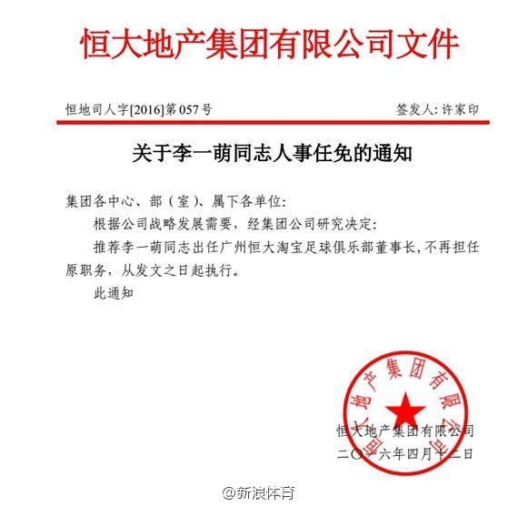

私企也有红头文件？长见识了。@新浪体育:广州恒大宣布刘永灼将下课，推李一萌任新董事长，据悉恒大此举主要是要加强俱乐部管理，加强内外援引进管理，加强俱乐部经营管理，按照既定的“全面增加经营收入，力争2016年开始实现盈利” 目标，提高俱乐部经营盈利能力。李一萌将任恒大俱乐部董事长 
为什么说国足签运不佳啊？难道与日本、澳大利亚、沙特、伊拉克和泰国同组就比现在这个签更好吗？叫我看国足可是每档都抽到了相对较弱的对手。另外我记得中国唯一一次进世界杯的十强赛同组中国是第二档球队，三四档正是卡塔尔和乌兹别克，对两队三胜一平。实力强了谁都不怕，实力弱了谁都是苦主。
 李一萌将任恒大俱乐部董事长
李一萌将任恒大俱乐部董事长